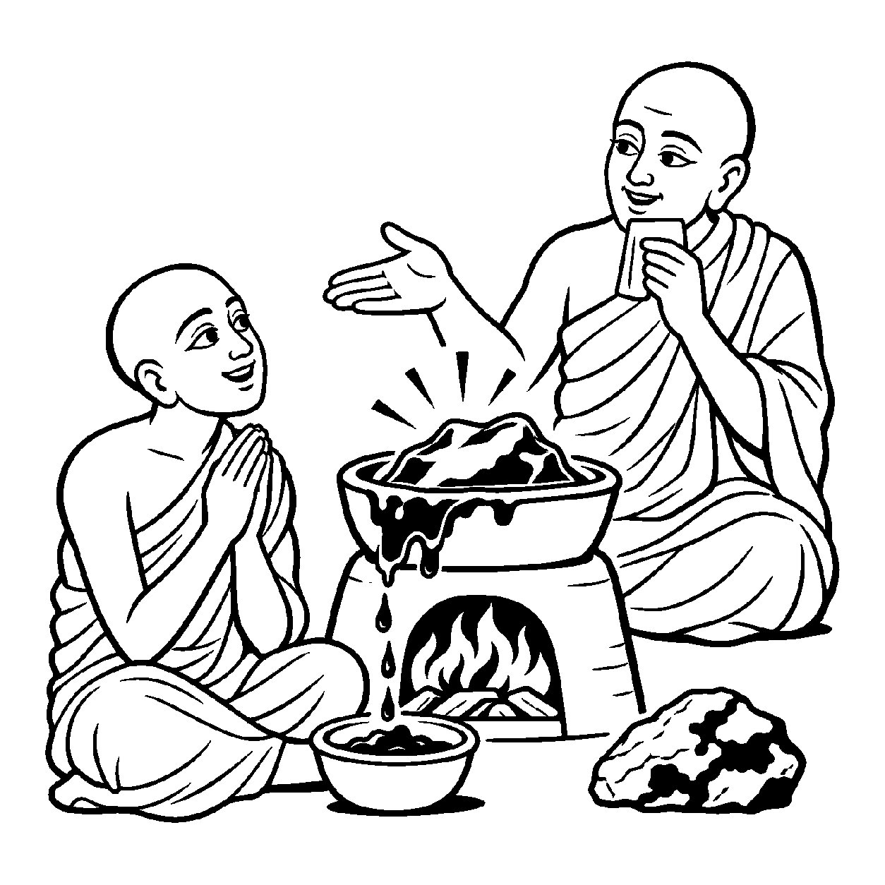

પાનખરની ઋતુમાં વડના વિશાળ વૃક્ષ પરથી એક સૂકું, પીળું પાંદડું પવનના ઝોંકાથી છૂટું પડીને નીચે ધરતી પર પડે છે. વટેમાર્ગુ જોઈને કહે છે: "આ વૃક્ષમાંથી પાંદડું ખરી પડ્યું!" અહીં અલગ થવાની ક્રિયામાં 'વૃક્ષ' એ અપાદાન કારક (સ્થિર આધાર જેમાંથી અલગ થવાય) બને છે. વાસ્તવમાં વૃક્ષ અને પાંદડું બંને પુદ્ગલ છે, અને પાંદડું પોતાની કુદરતી પરિપક્વતાથી ખરી પડ્યું છે. તેવી જ રીતે જ્યારે તપ, સંયમ અને શુદ્ધોપયોગના પ્રભાવે આત્મા સાથે અનાદિથી સંશ્લિષ્ટ કાર્મણ પુદ્ગલ વર્ગણાઓ ખરી પડે છે (નિર્જરા પામે છે), ત્યારે શાસ્ત્ર અને લોકમાં વ્યવહારથી કહેવાય છે: "આ જીવમાંથી આટલાં કર્મ અલગ થઈ ગયાં, જીવમાંથી પાપકર્મો ખરી પડ્યાં." અહીં ચેતન આત્માને અપાદાન કારક ગણીને તેમાંથી જડ કર્મોનું પૃથક્કરણ દર્શાવવું તેને 'પર-અપાદાનત્વ અસદ્ભૂત વ્યવહાર' કહેવાય છે.
વ્યાકરણમાં 'ધ્રુવમપાયેઽપાદાનમ્' કહેવાય છે — કોઈ વસ્તુ અલગ થાય ત્યારે જે ધ્રુવ (સ્થિર) રહે તે અપાદાન છે. પરમાર્થ દ્રષ્ટિએ આત્મા સદા અરૂપી અને અખંડ છે; કાર્મણ પુદ્ગલ કદી આત્માની અંદર ઓગળી ગયું નહોતું કે તેમાંથી ટુકડો થઈને અલગ પડે. પુદ્ગલ પોતાની પુદ્ગલ દ્રવ્યતામાં જ અલગ થાય છે. છતાં પણ અનાદિકાળના ક્ષીર-નીર જેવા સંયોગમાંથી કર્મોની મુક્તિ દર્શાવવા માટે આત્માને અપાદાન તરીકે સ્થાપવો અનિવાર્ય બને છે.
આ નય સાધકને પરમ આશ્વાસન આપે છે કે કર્મો ગમે તેટલાં ઘાટાં હોય તોપણ તે આત્માથી સર્વથા અલગ થઈ શકે છે; આત્મા સદા કર્માતીત શુદ્ધ જ રહે છે.
તપ સંયમથી ખરી પડે, પૌદ્ગલિક સહુ કર્મ;
આતમથી જુદાં થયાં, ભાખે આગમ મર્મ.
અપાદાન આતમ બને, ખરી પડે જડ ભાર;
નિર્જરાનો પંથ લહી, પામે ભવનો પાર.
સાધકને પરમ આશ્વાસન આપે છે કે કર્મો ગમે તેટલાં ઘાટાં હોય તોપણ તે આત્માથી સર્વથા અલગ થઈ શકે છે; આત્મા સદા કર્માતીત શુદ્ધ જ રહે છે.

વિનયચંદ્ર નામનો એક નવોદીત તપસ્વી ઘણા મહિનાઓથી ઘોર તપશ્ચર્યા કરતો હતો. તે ઉપવાસ અને ધ્યાન કરતો હતો. એક દિવસ તેના મનમાં શંકા પેસી ગઈ: "શાસ્ત્રો કહે છે કે આત્મા સાથે કર્મો અનાદિથી દૂધ અને પાણીની જેમ ભળેલાં છે. જો કોઈ વસ્તુ અનાદિથી અંદર ભળેલી હોય, તો તે ક્યારેય અલગ કેમ થઈ શકે? શું હું તપ કરીને મારા આત્માના ટુકડા કરી રહ્યો છું? જો કર્મ છૂટાં પડશે તો મારો આત્મા પણ કપાઈ જશે?" આ ભયાનક સંશયને કારણે તે તપ છોડી દેવાના વિચારમાં પડી ગયો.
તે જ સમયે ગામના એક પ્રખર જ્ઞાની સંત ત્યાં પધાર્યા. તેમણે એક કાદવવાળી ખાણમાંથી નીકળેલો સોનાનો કાચો પથ્થર લીધો અને તેને અગ્નિની ભઠ્ઠીમાં નાખ્યો. અગ્નિની જ્વાળામાં તપીને પથ્થરમાંથી કાળો કાદવ અને ક્ષાર ઓગળીને નીચે ટપકવા લાગ્યા અને અંદરથી શુદ્ધ કુંદન જેવું પીળું સોનું ઝળહળી ઊઠ્યું. સંતે પૂછ્યું: "વિનયચંદ્ર! શું અગ્નિમાં સોનાનો એક પણ કણ કપાઈ ગયો?" વિનયચંદ્રે કહ્યું: "ના મહારાજ, કેવળ મેલ જ છૂટો પડ્યો, સોનું તો પવિત્ર થઈ ગયું!" સંતે સમજાવ્યું: "વત્સ! પર-અપાદાનત્વ અસદ્ભૂત વ્યવહારને ઓળખ! જેમ સુવર્ણમાંથી મેલ અલગ થયો પણ સોનું સુરક્ષિત રહ્યું, તેમ તારા આત્મામાંથી કેવળ જડ કાર્મણ પુદ્ગલો ખરી રહ્યા છે. આત્મા તો અવિનાશી અખંડ જ્યોતિ છે. તેમાંથી કર્મ ખરી પડતાં આત્મા કપાઈ નથી જતો પણ પૂર્ણપણે પ્રકાશિત થાય છે!" વિનયચંદ્રનો સંશય ક્ષણવારમાં ઓગળી ગયો. નિર્ભય બનીને તેણે તપનો માર્ગ પકડ્યો અને તેનું ચિત્ત પરમ વિશ્રામમાં શાંત થઈ ગયું.
જો જીવ કર્મોને આત્માનો જ અભિન્ન અંગ માની લે, તો તે કર્મમુક્તિને અશક્ય માનીને મોક્ષમાર્ગથી વિમુખ થઈ જાય છે. પરદ્રવ્યો કે ક્ષણિક સંયોગોને જ સર્વસ્વ માની લેવાથી મમત્વ અને પરિગ્રહનો ભાર વધે છે, જે ચિત્તને સદા આકુળ-વ્યાકુળ રાખી આધ્યાત્મિક જાગૃતિને રૂંધી નાખે છે.
આ નય કર્મોના પૃથક્કરણની વાસ્તવિકતા પ્રગટાવી સાધકને તપમાં ઉત્સાહિત કરે છે, જેથી જીવ હું-પણાને ખોઈને પોતાના આત્મસ્વરૂપમાં સ્થિર થાય છે. તે વ્યવહારિક સંયોગોની મર્યાદા દર્શાવીને પણ આંતરિક ગુણો પ્રગટાવવાની પ્રેરણા આપે છે, જેથી સાધક નિજ ચૈતન્ય સ્વરૂપમાં મહામૌનમાં અંતર્લીન થઈ જાય છે.